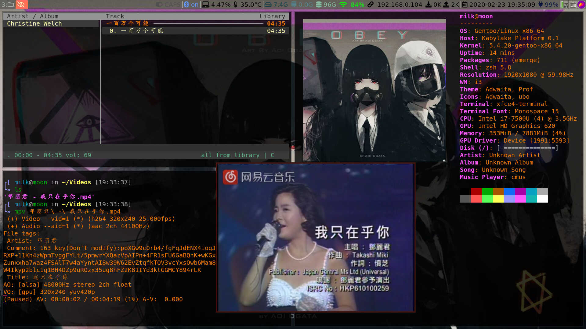
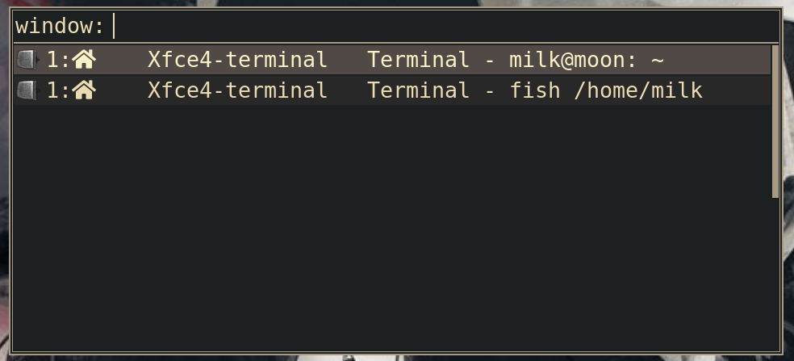
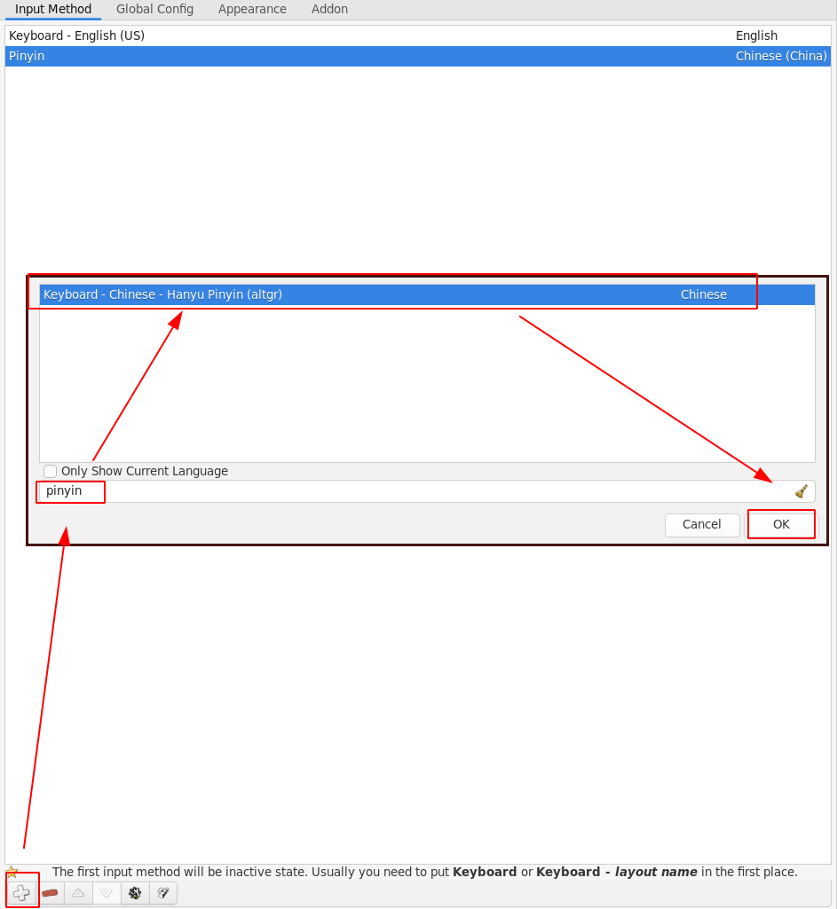

Gentoo 桌面配置一条龙。
grub 启动美化
参考：GRUB Wiki
- 修改文件
/etc/default/gruv
与外观相关的配置
GRUB_DISTRIBUTOR="Gentoo" # 发行版本
GRUB_GFXMODE=1920x1080x32 # 屏幕分辨率
GRUB_GFXPAYLOAD_LINUX="keep" # 保持分辨率， 默认情况是文字先大后小，比较突兀
GRUB_BACKGROUND="/boot/grub/gentoo.png" # 添加背景，这样比较有格调
GRUB_THEME="/boot/grub/themes/your_theme_file/theme.txt" # 接入主题包，Gentoo默认主题为starfield星空主题(个人感觉不是很好)
GRUB_TIME_STYLE=menu # 显示时间状态条更多见配置文件
- 修改文件完成后需要生成新的配置文件
grub-mkconfig -o /boot/grub/grub.cfg- 其他
个人认为没有必要过度美化
GRUB_TIME_STYLE=menu在没有主题包的加持下无效，可能是其他选项没有配置好。
桌面配置
i3wm

配置 i3wm 需要的工具：
- 按键检测工具
xev,xev输出的keysym值就是配置文件中bindsym需要的值 - 窗口检测工具
xprop，查找窗口名称命令：xprop | grep WM_CLASS
- 窗口管理器：
i3-gaps
i3-gaps相比 i3，添加了窗口之间的间隔
配置可以参考i3wm Wiki
安装
emerge --ask x11-wm/i3-gaps- 状态栏：
i3blocks
i3 config 文件中调用
emerge --ask x11-misc/i3blocks- 锁屏：
i3lock
i3lock默认：白色屏幕，输入密码，回车重新进入，图像仅仅支持 png 格式而且不支持缩放
利用 convert 随意配置了一个像素版本的锁屏图像
convert pic.xxx pic.png # 转格式
convert -scale 10% pic.png -scale 1000% pic.png # 缩小10倍放大十倍制造像素效果
convert -modulate 50% pic.png pic.png # 降低亮度
i3lock -i path/to/your/pic.png # 命令行锁屏，可在i3 config文件中调用- 透明背景
参考：
安装feh和xcompmgr
emerge --ask media-gfx/feh x11-misc/xcompmgr想要透明背景就先执行 xcompmgr &
想要背景需要执行feh --bg-fill /path/to/your/pic.png生成~/.fehbg文件，然后在i3 config中配置exec --no-startup-id sh ~/.fehbg
或者直接在配置文件中配置exec --no-startup-id feh --bg-fill /path/to/your/pic.png
多显示器设置(因此个人更为倾向执行~/.fehbg文件)
feh --bg-fill pic_path_for_windows_1 pic_path_for_windows_2- i3wm 使用 GTK
- 如果你选择安装
lxappearance那么接下来的配置部分就不用看了。 - 如果你选择手写配置文件，那么..
主题文件放置：
图标主题： ~/.local/share/icons/
窗体主题：~/.local/share/themes/
鼠标主题：~/.icon/使用 xfce4-appearance-settings 指定主题，但是对于在 i3wm 中使用，你还要修改配置文件。
对于 GTK+ 2.x
参考：How to configure GTK theme support?
测试 GTK+ 3.x 可行
创建文件~/.gtkrc-2.0
gtk-theme-name = "Clearlooks"
gtk-font-name = "Sans 8"对于 GTK+ 3.x
创建文件~/.config/gtk-3.0/settings.ini
[Settings]
gtk-theme-name = Adwaita
gtk-icon-theme-name = Adwaita
gtk-cursor-theme-name = AdwaitaAdwaita为对应主题文件夹名称。
个人测试：theme和icon能正常显示，但是cursor只能在浏览器中显示。不过lxappearance能解决。
- 一些额外的配置
- 配置 Caps_Lock 按键
i3/config文件
bindsym --release Caps_Lock exec pkill -SIGRTMIN+11 i3blocks11 可以取其他值
i3/i3blocks.conf 文件
[caps-lock]
label=CPAS
interval=once
signal=11caps-lock 原为/usr/libexec/i3blocks/下的keyindicator文件，方便识别改为caps-lock
- 蓝牙状态
bluetooth 检测，这个 i3blocks 官方没有提供，稍微写了一个简陋版
#!/bin/bash
STATUS=${bluetoothctl info | grep -wo 'Connected: yes'}
if [[ $STATUS = 'Connected: yes' ]]; then
echo "on"
echo "on"
echo "#6498FF"
fi放置在/usr/libexec/i3blocks/目录下
亮度调整 light
light软件包并不在官方软件包中, 使用layman添加对应提供源然后安装。或者从源码安装。
emerge --ask dev-libs/light菜单 rofi

什么是 rofi?
A window switcher, application launcher, ssh dialog and dmenu replacement
安装
- 记得添加
windowmode保证 window switcher 的使用，修改/etc/portage/package.use/rofi文件
x11-misc/rofi windowmode- emerge
emerge --ask x11-misc/rofirofi导出配置文件
rofi -dump-config > ~/.config/rofi/config.rasi根据提示配置即可
主题切换可以使用rofi-theme-selector快速浏览主题，根据个人选择
消息通知 dunst
没什么好说的。(直接下载了官网文件)
dunst-project
emerge --ask x11-misc/dunstneofetch 配置
~/.config/neofetch/config文件根据提示配置
音乐播放器 cmus
主题设置
:colorscheme gruvbox更多主题设置在/usr/share/cmus文件中
基本使用
| 效果 | 命令 |
|---|---|
| 添加音乐 | :add ~/Music |
| 播放 | x |
| 暂停 | c |
| 下一首 | b |
| 上一首 | z |
| 停止 | v |
| + | 音量+10% |
| - | 音量-10% |
视频播放器 mpv
基本使用
mpv 支持鼠标
| 效果 | 命令 |
|---|---|
| 暂停 | Space / p |
| 视频下一个/上一个 | > / < |
| 向前/向后 5 秒 | Left / Right |
| 向前/向后 10 秒 | Up / Down |
| 加速/减速 10% | [ / ] |
| 当前速度减半/加倍 | {/ } |
| 原始速度 | Backspace |
| 音量减少/增加 | 9 / 0 |
| 静音 | m |
| 全屏 | f |
| 退出全屏 | Esc |
| 退出 | q |
Fcitx 中文输入
- 安装
emerge --ask app-i18n/fcitx- 修改配置文件
~/.xinitrc
export XMODIFIERS="@im=fcitx"
export QT_IM_MODULE=fcitx
export GTK_IM_MODULE=fcitx
eval "$(dbus-launch --sh-syntax --exit-with-session)"- Fcitx GUI 配置工具
- 依赖 GTK2 或 GTK3 的
fcitx-configtool - 依赖 KDE 的
kcm-fcitx
我选择fcitx-configtool
emerge --ask app-i18n/fcitx-configtool- 中文支持
本身支持中文输入。
fcitx-configtool启动工具。

其他
时间校准
修改/etc/conf.d/hwclock
clock="local"时间快 8 个小时，原因：clock=”UTC”
中国是东八区，+8 个小时
/etc/init.d/hwclock restart # 我没发现有多大用，走个形式吧个人认为主要原因是在安装的时候ntpd -q -g同步的是 UTC 时间，然而安装后并没有再次同步
在设置 hwclock 之后：
emerge --ask net-misc/ntp
ntpd -q -gdate 时间同步完成
电源管理
使用 xfce4-power-manager
i3 config添加
exec_always --no-startup-id xfce4-power-manager也可以写在外部文件中供 i3 调用
重启失效，发现 xfce4-power-manager-settings 中 tray icon 默认关闭。
经过查找，发现 xfce4-power-manager.xml 文件中仿佛有我们想要的。
路径：~/.config/xfce4/xfconf/xfce-perchannel-xml/xfce4-power-manager.xml
<?xml version="1.0" encoding="UTF-8"?>
<channel name="xfce4-power-manager" version="1.0">
<property name="xfce4-power-manager" type="empty">
<property name="brightness-switch-restore-on-exit" type="int" value="1"/>
<property name="brightness-switch" type="int" value="1"/>
<property name="general-notification" type="bool" value="true"/>
<property name="show-tray-icon" type="bool" value="true"/>
<property name="presentation-mode" type="bool" value="true"/>
</property>
</channel>设置为只读，重启发现 tray icon 存在。
chmod 444 xfce4-power-manager.xml多显示器需要针对设置
截屏工具 flameshot
参考：flameshot
flameshot软件包并不在官方软件包中, 使用layman添加对应提供源然后安装。或者从源码安装。
使用：
flameshot gui，选择截取
flameshot full -p /path/to/put，全屏截取
- Valine
- LiveRe
- ChangYan